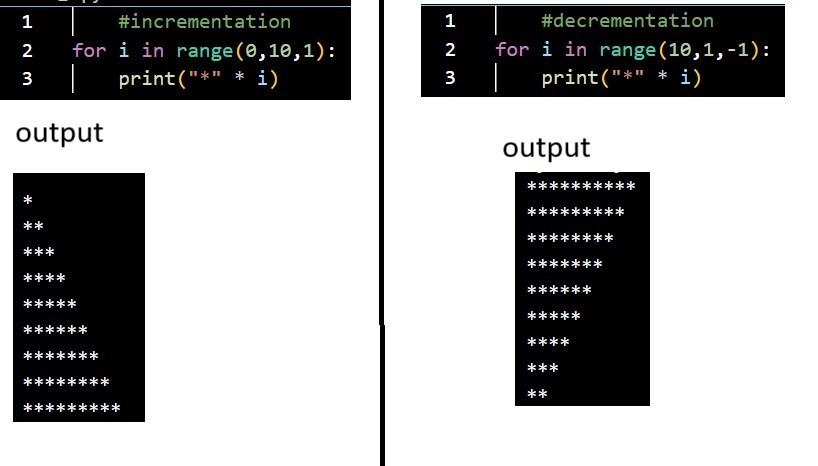
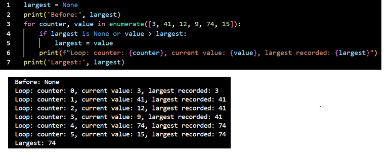
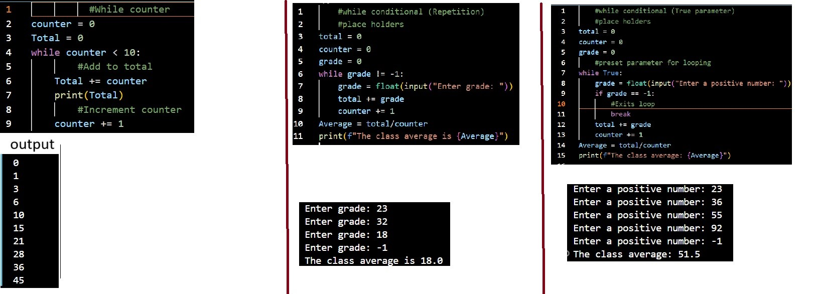
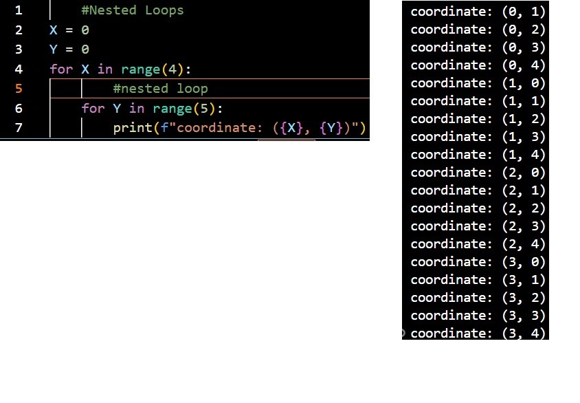

if, elif, else are selections that allows the program to make a decision based on whether certain
conditions are met or not. It will start from the top if statement and work its way down until one of
the conditions are met inwhich the code block to that statement would be executed.
Lines 2,4,6: conditions
These are the conditions in which the paramater must satisfy in order for the code block to execute,
if they don't meet the requirements the code block would be skipped
Lines 1,3,5: code blocks
Code blocks are snippets of code that will execute if the condition they are under are met.
1) snippets of code in a code block cannot be accessed outside of the code block
2)Any code that is not within the code block would not be included when the code block is executed
for loop

code breakdown
format: for i in range(start,end,step)
i : placement holder for the counter (this can be named anything)
start : The starting value for the counter
end : The last value to stop, this value is not included in the counter so once this value is reached the
for loop terminates
step: This is the rate at which the counter increases or decreases per session
for loop with enumerate

code breakdown
enumerate format: for index,value in enumerate(content)
index : variable that stores the index placement value of the currently proccessed element
value : variable that stores the currently processed element in the loop
enumerate : method that lets the function to track the position (index) of the element being processed
content : This is the condition being processed for the for loop
Line 1: blank variable initiation
This initiates the variable to a null type, which means a variable was created with no assigned
datatype or value
Line 3: for loop with enumerate
create a for loop with the enumerate function to track the index of the element being processed
While looping

code breakdown: while counter (left)
while counter
while counter is a while loop that acts similar to a for loop
Lines 2,3: initialization/tracher
initializes the variable and stores any changes performed for these variables in the code block
Line 4: while loop condition
Loop terminates when counter exceeds the value 10
Lines 6-9: code block
Line 6: Adds value to the total variable which would be stored into line 3 Total
Line 9: Increases counter by 1
Important note:
1) A counter while while loop operates like a for loop, however without a counter it will result
as an inifinite loop as it will never end
code breakdown: While conditional: repetition(middle)
Conditional while loop
A conditional while loop is that can be used when the number of repetitions is unknown.
The termination of the loop is not by counter, but when a certain contition is met
Line3-5: variable initialization
Creates the variable and stores any changes to the variables within the code block
Line 6: while loop condition
loop will continue to execute until grade value = -1
Lines 7-9: Code block
Line 7: User input for grade variable
Line 8: Adds grade input to the total in total variable
Line 9: Increment counter variable #Note that the counter variable here has nothing to do with the parameter to terminate the loop
code breakdown: while conditional True parameter (right)
Line 3-5: variable intialization
Initializes variables and stores any changes to these variables in the loop
Line 6: While loop parameter
Auto looping capability
Lines 9-11: loop termination
If the condition in the if statement is true the loop will be terminated
break: A syntax used to exit a loop and return to the original code
While loop repetition vs True Parameter
repetition pros:
1) good for simplicity and easy to manage
2) No concern of accidentally creating an infinite loop
Repetition cons:
1) A condition must be initiated for the loop to initiate
2) parameter must be put into consideration when creating the code block
3) When using input, placemenbt of execution can affect the parameter
4) Difficult to create when the function of the code contains complex conditions
True parameter pros:
1) This creates an auto looping where a legit parameter is not required
2) Code block creation does not need to consider parameter
3) flexible as complex function of loop is easily created
True parameter cons:
Placememt of break to terminate loop is important as misplacement can create an infinite loop
Nested loops

code breakdown
Line 4: first loop
When condition in parameter is true, code block will be executed
Line 6: Nested loop
The nested loop will continue to execute until the parameter is false before returning
execution back to the outer loop
Note:
This cycle will continue to repeat itself until the parameter for the outer
loop becomes false. Then the code will return the execution back to the main code